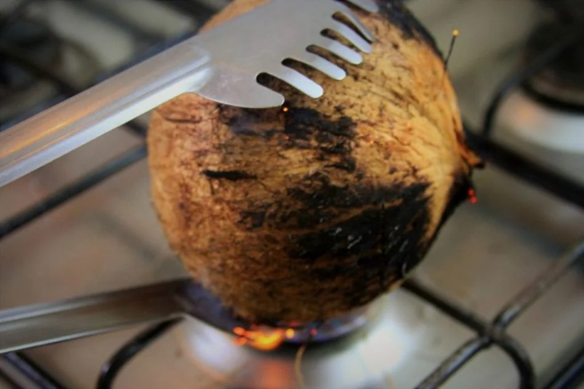
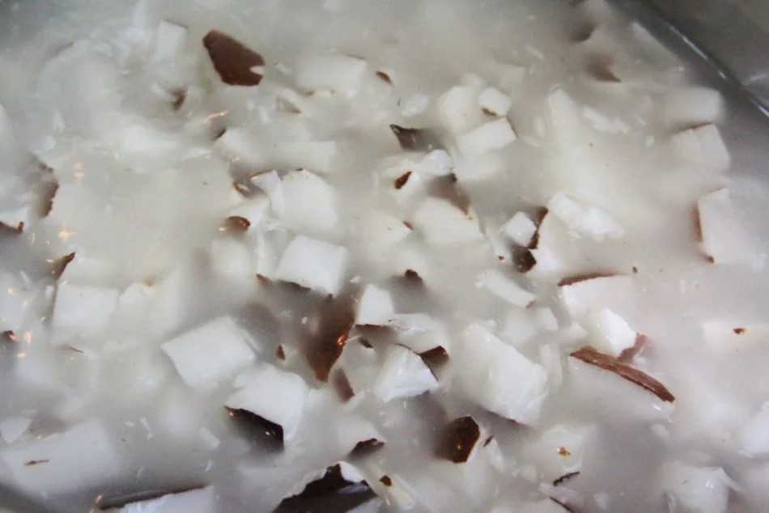

Ingredientes
1 coco seco
Descrição
Pra fazer a farinha de coco você vai precisar de 1 coco seco e é muito importante escolher um coco que esteja cheio de água, sem vazamentos e nem sinais de mofo.
Para escolher o coco observe a casca em toda a sua integridade e balance para sentir o peso e a água chacoalhando dentro dele. Não compre o coco que esteja sem a água, pois a chance de ele estar rançoso é alta,
Preparação
ABRINDO O COCO
Abra o coco seco e retire a água
Leve o colco sobre a chama do fogão por aproximadamente 10 minutos virando sempre com o auxílio de um pegador de massa ou um pano para que você não se queime.

O coco precisa estar bem pretinho e também precisa rachar
Com um martelo, bata o coco em toda a superfície.
No final, dê uma martelada bem forte para abrir a casca
Retire a polpa da casca
FAZENDO O LEITE DE COCO
Processe o coco por alguns segundos em um processador de alimentos até ficar como na foto abaixo (atenção: não coloque pedaços muito grandes no processador, pode estragá-lo)
Coloque o coco em uma panela com cerca de 4 xícaras de água (até a água passar um pouco do nível do coco)
Quando começar a levantar fervura formando bolhas é só desligar a panela e esperar que ela fique morna. Não precisar ferver muito tempo.

Depois que o coco já estiver morno leve-o ao liquidificador e bata por aproximadamente 3 minutos, é importante bater bem pois assim o leite de coco fica mais saboroso e também o resíduo que sobra ficará bem fininho, ideal para fazer a farinha.
Coe com um voal, separando o líquido da massa
FAZENDO A FARINHA DE COCO
Coloque este resíduo (que ficou no voal) em uma panela grande e em fogo médio-baixo, mexendo sempre com uma espátula.
Quando o coco começar a mudar de cor, mantenha em fogo baixo, cuidando para não queimar, e mexendo sempre.
Todo o processo demora em média, 15 minutos
Não deixe ficar muito escura, pois irá amargar se queimar
O ponto é quando pegar a farinha com os dedos e sentir que está bem sequinha
Deixe esfriar na panela e depois guarde em um pote de vidro e guarde na geladeira, para durar mais
Notas
O leite de coco dura de 3 - 5 dias na geladeira
A farinha, se bem sequinha, pode durar até um mês
Se você sentir algum odor azedo quando for usar a farinha, provavelmente está estragada. Então experimente antes de arruinar a receita que estiver fazendo com ela.